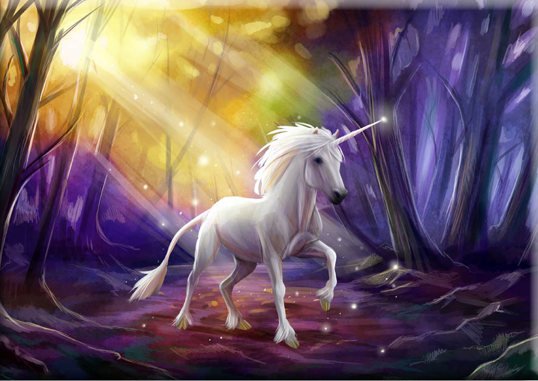

stworzenie fantastyczne, występujące w mitach i legendach, posiadające jeden róg pośrodku czoła. Najwcześniej opisane przez Ktezjasza w V-IV w. p.n.e.; Pliniusz Starszy dodał mu jeszcze łeb jelenia, stopy słonia i ogon lwa. W średniowieczu przedstawiano go z głową i korpusem białego (rzadziej czerwono-czarnego) konia, dodając niekiedy nogi jelenia i lwi ogon. Jednorożca uważano za jedyne zwierzę mające odwagę atakować słonia, posiadające tak ostre kopyta, że jedno ich uderzenie rozcina słoniowi brzuch.
W średniowieczu wizerunek dziewicy z jednorożcem na kolanach był częstym motywem sztuki chrześcijańskiej jako symbol Najświętszej Marii Panny, a sam jednorożec symbolizował Chrystusa. Wierzono również, że róg tego stworzenia jak również i jego łzy mają magiczną moc oczyszczania wszystkiego, czego dotkną, i są panaceum na wszelkie trucizny i choroby. W sztuce średniowiecznej i renesansowej był symbolem czystości i niewinności.
Jednorożca identyfikowano m.in. z nosorożcem, oryksem, elandem i kudu. Do grona możliwych pierwowzorów często zalicza się także wymarłe elasmoterium.
Z wielu prehistorycznych szczątków, znalezionych w Einhornhöhle w niemieckich górach Harz, część została w 1663 użyta przez burmistrza Magdeburga, Otto von Guericke do stworzenia „szkieletu” jednorożca. Miał on tylko dwie nogi i długi pojedynczy róg (będący siekaczem narwala). „Szkielet” został złożony ze skamieniałych kości nosorożca włochatego i mamuta. Zbadał go Gottfried Leibniz. Do tej pory wątpił on w istnienie jednorożców. Po przebadaniu „szkieletu”, zmienił zdanie[37].

Georges Cuvier utrzymywał, iż ze względu na to, że jednorożec miał rozdwojone kopyta, powinien także posiadać parzyste rogi. Dr Franklin Dove z Uniwersytetu Maine w latach 30. XX wieku znalazł jednak lukę w rozumowaniu Cuviera, stwierdzając, iż większości ludzi wydaje się, że rogi parzystokopytnych wyrastają wprost z czaszki, podczas gdy wzrost poroża rozpoczyna się pod postacią niezamocowanych fragmentów tkanek, które dopiero w następnej kolejności „zakorzeniają” się w kości. Jak stwierdził naukowiec, z powyższych względów położenie rogów jest podatne na zmiany naturalne lub sztuczne. W 1933 Dove przeprowadził eksperyment na jednodniowym cielęciu rasy Ayrshire – usunął chirurgicznie jeden z rogów, a zalążek drugiego przesunął na środek czoła. Gdy zwierzę rosło, wzmacniał się także róg, przyjmując formę pojedynczego, symetrycznego i mocnego tworu. Młody byk z powodzeniem używał go m.in. do walk z rywalami[38].